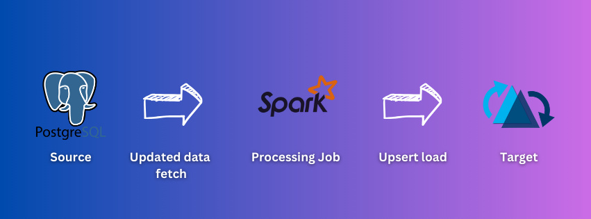

Project Overview
This repository contains various data ingestion and processing workflows designed to handle diverse data sources to manage an Apache Hudi lakehouse architecture. The processes include data ingestion from multiple sources, CDC (Change Data Capture), and clustering for solving problems related to small files.
The ETL processes include:
- Ingestion from Parquet Source

Ingesting parquet files from a source to an Apache Hudi table. This process ensures that data stored in Parquet format is efficiently loaded into the Hudi table, enabling faster query performance and better data management.
- Ingestion from CSV Source

Ingesting CSV files from a source to an Apache Hudi table. This process handles the conversion of CSV data into a format that can be efficiently queried and managed within the Hudi ecosystem.
- Incremental Pull from Postgres

Fetching the latest data inserted or updated in a Postgres table into an Apache Hudi table. This ensures that the Hudi table is always up-to-date with the latest changes from the Postgres database.
- Ingestion from Kafka Source

Fetching data from a Kafka topic to an Apache Hudi table. This process allows for real-time data ingestion from Kafka streams, ensuring that the Hudi table reflects the latest data from the Kafka topic.
- Ingestion from Kafka Source using SchemaRegistry
Fetching data from a Kafka topic to an Apache Hudi table, while managing the schema for the Kafka topic in a registry. This makes the process more manageable and ensures schema consistency.
- Ingestion from Multiple Homogeneous Sources

Apache Hudi job to ingest data from multiple homogeneous sources at a time, such as reading multiple CSV files. This process simplifies the ingestion of data from similar sources into a single Hudi table.
- Apache Hudi Continuous Mode Ingestion and using Transformer while loading
Apache Hudi job scanning for changes in the source periodically and ingesting data from the source. It also applies light transformations while loading using a transformer, ensuring data is always current and properly formatted.
- Ingestion from Hudi Source
Creating a silver data layer from a bronze data layer of Hudi tables. This process involves transforming and optimizing data from one Hudi table to another, improving data quality and query performance.
- Load to MinIO

Managing the data lake on a MinIO platform, making it similar to loading the data on AWS S3. This process ensures that data is stored efficiently and can be accessed quickly from the MinIO storage.
- CDC Load from Logs
Change data capture pipeline, utilizing Debezium and Kafka connector to fetch the updated data from a Postgres instance and update on the Apache Hudi lakehouse. This ensures that the Hudi table reflects the latest changes from the source database.
- Async Clustering - Removing Small File Issue
Asynchronous Apache Hudi job to address the small file issue, improving read efficiency for Hudi tables. This process consolidates small files into larger ones, optimizing storage and query performance.
- Generic Multi-Table Postgres Ingestion

Generic code for loading multiple Postgres tables in incremental mode to Apache Hudi. This process simplifies the ingestion of data from multiple tables, ensuring that each table is kept up-to-date in the Hudi lakehouse.